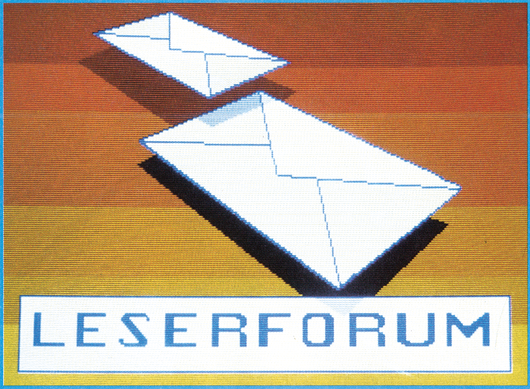

Floppy-Probleme?
Mit meiner Floppy 1541 lassen sich des öfteren Programme nicht mehr richtig laden. Auch bei der Formatierung treten Fehler auf. Wie können diese Fehler behoben werden und was kostet das?
Ausgabe 10/86
Ich hatte ähnliche Probleme mit meiner Floppy-Station, doch der Gang zur Werkstatt brachte nur das Ergebnis, daß Computer und Floppy-Laufwerk angeblich in Ordnung seien. Es ist daher denkbar, daß auch bei Ihnen elektromagnetische Einflüsse von außen den Datenfluß zwischen Floppy-Station und Computer beeinträchtigen. Nachdem ich das Floppy-Laufwerk weiter vom Fernseher weggestellt und außerdem Stromkabel, die zwischen Computer und Floppy lagen entfernt habe, läuft alles wieder normal.
Seltsame Null?
Wie kommt folgendes Phänomen zustande:
102,82216807939999999 = 663,999999 Beim Anfügen einer Null an die letzte Dezimalstelle des Exponenten wird das Ergebnis zu 664,000002. Bei weiteren drei Nullen haben wir 664,000008.
Lichtorgel am C 64?
Ich möchte eine Lichtorgel kaufen (bauen oder bauen lassen), die mit dem C 64 verbunden auf diesem 3D-Grafiken verändert beziehungsweise bewegt, und außerdem auch noch verschiedene Scheinwerfer bedient. Wer hat eine solche Anlage entwickelt, und kann mir ein günstiges Angebot machen?
DIM-Anweisung aufheben?
Wer weiß, wie man eine DIM-Anweisung in einem Basic-Programm wieder aufheben kann, um ein Feld neu definieren zu können? Andere Felder und Variablen müssen erhalten bleiben.
Ausgabe 9/86
Im 64'er Sonderheft 2/86, Tips und Tricks, steht ein kleines Maschinenprogramm welches dies bewerkstelligt. Es heißt »Clear DIM«.
Fastload und Wiesemann-Interface?
Kaum bin ich Besitzer eines Epson RX-80, tauchen schon die ersten Probleme auf. Wenn ich ein Programm mit Fast-Load laden will, dann fängt der Computer erst gar nicht an zu laden. Beim Betrieb mit Hypra-Load gibt dann der Computer gleich aus: »Bitte nur die Floppy anschalten«, obwohl der Drucker ja ausgeschaltet ist. Nach meiner Meinung liegt das am Wiesemann 92000/G-Interface. Wer kann mir da weiterhelfen?
C 64 und Pocket-Computer verbinden?
Ich suche Hard- und Software, um einen Sharp PC 1402 Pocket-Computer an einen C 64 anzuschließen.
Ausgabe 7/86
Ich habe ein Modul und die Software »Transdata 64 « bei der Firma
ECPS Rainer Kratzer
Unterkessacher Str.11
6962 Ad.-Leibenstadt
zum Preis von 89 Mark erhalten.
Zeichensatz verändern und speichern?
Ich möchte den Zeichensatz irgendwo im Bereich von $5000 bis $A000 unterbringen. Es ist mir zwar gelungen, ihn nach $3000 zu verschieben, indem ich den Bereich von $D000 bis $DFFF nach $3000 kopiert und dann den Wert 29 ins Register 24 des VIC geschrieben habe. Für Basic-Programme steht mir dann aber nur noch der Bereich von $0800 bis $2FFF zur Verfügung. Mein Programm geht aber über diesen Bereich hinaus. Wer kann mir helfen? Wie muß ich die CIA-Register (welche?) verändern, um den Zeichensatz an eine andere Adresse legen zu können?
Ausgabe 9/86
Es ist durchaus möglich, einen selbstdefinierten Zeichensatz in einem Bereich zu benutzen, der von Basic nicht beansprucht wird. Das nun folgende Programm setzt voraus, daß ein selbstdefinierter Zeichensatz ab Adresse $F000 vorhanden ist. Zuerst wird die letzte 16-KByte-Seite ausgewählt ($C000-$FFFF) und der Bildschirm nach $CC00 verlegt, dann wird das Register 24 im VIC-Chip noch geändert und der Bildschirm gelöscht. Wenn möglich, sollte man auch die Tastenkombination von
<RUN/STOP +RESTORE> durch POKE 808,225 sperren, da der Wert in Adresse 648 nicht durch <RUN/STOP +RESTORE> initialisiert wird.
10 POKE 56576,0
20 POKE 648,204
30 POKE 53272,61
40 PRINT "{CLR} "Der VIC kann nur 16 KByte auf einmal verwalten. Darin ist der Zeichensatz, der Bildschirm — und der Spritespeicher enthalten. Anstatt nun die Videobank zu ändern, setzt man einfach den Basic-Start höher. Dadurch wird der Zeichensatz nicht mehr überschrieben. Also gibt man vor dem Laden des Programmes folgendes ein: POKE 43,1:POKE 44,12288/256: POKE 12288,0:CLR:NEW.
Um Speicher zu sparen, verschiebt man den Zeichensatz nach $2000 und schreibt den Wert 24 in das VIC-Register 24. Diese Methode ist im allgemeinen weniger kompliziert als das Verändern der Videobank.
Koalapainter und C 128?
Wie kann man Koalapainter-Bilder im C 128-Modul laden und im Grafik-Modus darstellen?
Börsenkurse per Computer?
Kann man über einen Heim- oder eventuell einen Personal Computer die aktuellen Börsenkurse abfragen? Für mich wäre besonders die Züricher, Frankfurter und Pariser Börse interessant. Ich stelle mir dies über das Datex-P-Netz mittels einer entsprechenden Datenbank vor. Meine Fragen im einzelnen:
1. Geht dies alles auch mit einem C 64?
2. Muß man unbedingt das Datex-P-Netz benutzen?
3. Welche Software gibt es überhaupt für solche Anwendungen und wieviel würde dies ungefähr kosten?
Mord auf dem Fluß?
Wie geht es weiter bei dem Adventure »Murder on the Mississippi«? Ich habe bereits einen öligen Lappen, einen Pistolenkasten sowie eine Pistole. Wo finde ich den Schlüssel zum Safe? Was hat es mit dem Salon auf sich?
EPROMs für C 16?
Seit kurzer Zeit besitze ich einen C 16 und möchte diesen Computer für Steuerungszwecke einsetzen. Dabei stellen sich mir folgende Probleme:
1. Wie kann man beim C 16 Programme die in EPROMs gespeichert sind automatisch in den Arbeitsspeicher laden und starten? Welche Bedingungen müssen dafür erfüllt sein?
2. An welchen Control-Port kann ein Lichtgriffel angeschlossen werden? Wo kann die X- und Y-Position abgefragt werden?
Haushaltskasse aus SH 7/86?
Nachdem ich portionsweise die Daten des 1. Halbjahres 86 eingegeben habe, werden bei der Abfrage von zwei Konten (Kto 1 und Kto 14) die einzelnen Daten nicht mehr eingelesen. Der Ladevorgang setzt nach kurzem Anlauf der Floppy-Station wieder aus. In der Monats- und Jahresübersicht sind aber die Summenwerte noch erhalten.
Bei der Ausgabe der Directory erscheint seitdem hinter diesen Konten ein Stern, was wohl bedeutet: FILE NOT CLOSED. Der Disketten-Tester aus SH 5/85 weist aber keinen Fehler auf. Wer kann mir weiterhelfen?
Platinen-Layout einfach gemacht
In bezug auf den Leserbrief von Heiko Kamp aus Ausgabe 8/86 möchte ich hinzufügen, daß ich die Methode mit der Folienkopie ebenfalls seit langer Zeit benutze. Ich wandele dies jedoch erfolgreich folgendermaßen ab: Bei der Belichtung lege ich drei Folien deckungsgleich übereinander und hefte sie zusammen. Um hierfür nicht drei Folien zu benötigen, repetiere ich das Layout dreimal auf einen DIN-A4-Papierbogen, was mit dem Fotokopierer leicht durch mehrmaliges Umkopieren zu erreichen ist. Dann wird eine einzige Folie davon kopiert, die noch in drei Teile zerschnitten, übereinandergelegt und zusammengeheftet werden muß. Die derartig hergestellten Vorlagen sind absolut lichtdicht.
Pinbelegung von Proterm-64XTW?
Ich habe ein Modem von Resco, welches den Autowahlimpuls auf User-Port-Pin J benötigt. Da Proterm jedoch die Wählimpulse auf Pin F gibt, geht das Autodial nicht. Was für Änderungsvorschläge gibt es?
Zeichensatz als Ladeprogramm?
Wie kann man einen mit Hi-Eddi geänderten Zeichensatz, der an den Anfang des Basic-Speichers ab Adresse 2048 geladen wurde, in einem Basic-Programm, das ab Adresse 6144 steht, verwenden? Dies soll möglichst so geschehen, daß nur ein Ladeprogramm notwendig ist, welches den Basic-Anfang verschiebt und Programme lädt.
Nachladen?
Ein Basic-Programm, das mit »A=A+1:IF A=1 THEN LOAD"...« nachlädt, erkennt die IF-Abfrage nach einer Compilierung nicht mehr. Es wird dann ständig nachgeladen. Wie kann man diesen Fehler beheben?
Digitalisierer für C 16?
Gibt es einen Video-Digitalisierer für einen C 16 mit 64 KByte, oder kann mir ein Leser mit einem Umbauplan für einen C 64/C 128-Digitalisierer helfen?
Arbeitet Superbase mit der SFD 1001?
Zur Archivierung meiner Schallplatten, Bücher etc. nehme ich meinen C 64 und das Programm Superbase. Seit geraumer Zeit wird allerdings der Speicherplatz der 1541-Floppy zu knapp. Deshalb meine Frage: Arbeitet Superbase auch mit einer SFD 1001 zusammen oder bleibt nur 1541?
Ausgabe 9/86
Die Floppy SFD 1001 arbeitet mit Superbase zusammen. Es gibt zwei Möglichkeiten:
1. Superbase mit 1541 mit Gerätenummer 8 laden und starten. Dann eine unter Gerätenummer 9 angeschlossene Floppy SFD 1001 mit Befehl "database:Datenbankname,9,0:file Filename" ansprechen. Der große Speicherplatz der 1001 steht nun zur Verfügung.
2. Superbase auf die 1001 überspielen und dann nur noch damit arbeiten. Dies erfordert allerdings genaue Kenntnisse über die Wirkungsweise des Programms. Ich arbeite schon länger nach Punkt 2. Die deutschen Umlaute erscheinen auch auf meinem Epson-Drucker und er kann Steuerbefehle erhalten und ausführen.
Druckpuffer für MPS 801?
Ich bin seit geraumer Zeit auf der Suche nach einen Druckpuffer für meinem MPS 801. Gerade für einen so langsamen Drucker, wie den MPS 801, wäre ein Puffer eine sinnvolle Erweiterung. Ich würde mir einen Bausatz mit 8 oder 16 KByte Speicherkapazität vorstellen. Wer hat so etwas, oder kann so etwas liefern?
Reset am Joystickport?
Wenn ich am Control-Port 1 kurz Pin 8 (GND) mit Pin 7 verbinde, führt der Computer einen Reset aus. Was heißt das GND und was ist der Grund für diesen Reset? Kann er dem Computer schaden?
Dieser »Reset«, den Sie hier ausgeführt haben, ist ein Beinahe-Kurzschluß der Spannungsversorgung Ihres Computers. Zwischen Masse (GND) und Pin 7 (Plus) hat Sie nur ein kleiner Widerstand gerettet. Da durch den Beinahe-Kurzschluß die Spannung absinkt, wird beim Lösen der für den Computer nicht ungefährlichen Verbindung ein Reset ausgelöst.
Sonderstellung des Kommas
Warum kann ich in einem String kein Komma verwenden?
Ausgabe 10/86
Sicherlich ist es bequemer, eine der vielen abgedruckten, gegenüber dem Commodore-Basic geänderten Input-Routinen anzuwenden. Doch gerade in Verbindung mit anderen Basic-Erweiterungen oder bei der Verwendung einer 80-Zeichen-Karte, besteht ohne fundierte Kenntnisse der Maschinensprache überhaupt keine Möglichkeit, die geänderten Routinen zu verwenden. Wesentlich einfacher gestaltet sich dagegen folgende Lösung, die mit dem vorhandenen Basic des C 64 auskommt. Es können bis auf Anführungsstriche (CHR$(34)) sämtliche Zeichen in einen String geschrieben werden. Es ist auch ohne weiteres möglich, diesen String abzuspeichern und anschließend wieder richtig einzulesen. Zu Geschwindigkeitsverlusten beim Speichern auf Diskette kommt es dadurch nicht.
Commodore 64:
10 POKE 19,64
20 POKE198,7:POKE631,144:
POKE632,34:POKE633,34
30 POKE634,5:POKE635,20:
POKE636,46:POKE637,157
40 INPUT A$:PRINTCommodore 128:
10 POKE21,64
20 POKE208,7:POKE842,144:
POKE843,34:POKE844,34:
POKE845,5:POKE846,20:
POKE847,46:POKE848,157
30 INPUT A$:PRINTHardware-Probleme
(1) Aus der Ausgabe 4/86 des 64'er-Magazins habe ich erfahren, wie man einseitige Platinen ätzt. Aber nun möchte ich doppelseitige Platinen selbst herstellen und hätte gerne gewußt, wie ich da vorgehen muß.
Ich belichte doppelseitig beschichtete Platinen folgendermaßen:
Ich lege die Folien der beiden Seiten paßgenau übereinander und klebe sie mit Klebestreifen am Rand an drei Seiten zusammen, so daß eine Tasche entsteht. In diese Tasche kann ich dann die geschnittene, fotobeschichtete, kupferkaschierte Platine einlegen und belichten. Vorsicht ist nur beim Wenden geboten, daß die Platine in der Tasche nicht verrutscht.
Silver Reed EX 30 E am C 64?
Ich besitze eine Typenradschreibmaschine Typ Silver Reed EX 30 E, Silver Seiko Ltd., und möchte diese an den Commodore 64 anschließen. Von der betreffenden Firma war keinerlei Auskunft zu erhalten, wie das in der Bedienungsanleitung als Option beschriebene Interface IF 30 arbeitet. Hat jemand schon Erfahrung mit einem solchen Anschluß gemacht?
C 64 stürzt ab?
Nach ein- bis zweistündigem Betrieb stürzt mein Commodore 64 ständig ab. Dabei erscheinen auf dem Bildschirm viele sinnlose Zeichen und Fehlermeldungen. Wenn man den C 64 dann ausschaltet oder einen Reset auslöst, ist oft schon die Einschaltmeldung »kaputt«. Nach ungefähr einer halben Stunde funktioniert der Computer dann wieder. Woran kann es liegen und wer hat ähnliche Probleme?
16 Farben bei RGB?
Weshalb stehen beim Philipsmonitor CM-8533 im 80-Zeichenmodus nur 8 Farben zur Verfügung?
Ausgabe 7/86
Es geht auch mit 16 Farben. Dazu wird lediglich das Intensity-Signal vom Computer zum Monitor geführt.
Die neun Prinzen von Amber
Nachdem ich das große Anfangsproblem im ersten Bild des Adventures »Nine Princes in Amber« mit »ATTACK MAN« bewältigt und auch die Angreifer im Wohnzimmer mit »THROW STATUE« besiegt habe, ging es eigentlich recht flott weiter. Ich habe nun jedoch schier unlösbare Schwierigkeiten mit Bruder Julian im Wald von Arden. Wie kann man ihn im Schwertkampf besiegen, da es offensichtlich unmöglich ist, dem Kampf auszuweichen?
C 64 an Amiga-Monitor anschließen?
Wie schließe ich den Monitorausgang des C 64 an einen Amiga-Monitor mit FBAS-Eingang an?